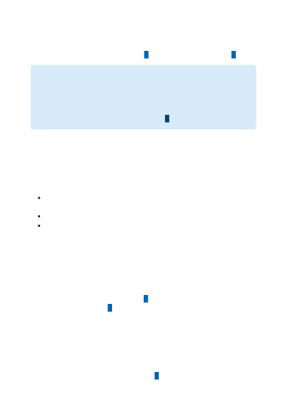

Azure OpenAI speech to speech chat
Article • 04/19/2023
Reference documentation | Package (NuGet) | Additional Samples on GitHub
In this how-to guide, you can use Azure Cognitive Services Speech to converse with
Azure OpenAI Service. The text recognized by the Speech service is sent to Azure
OpenAI. The text response from Azure OpenAI is then synthesized by the Speech
service.
Speak into the microphone to start a conversation with Azure OpenAI.
The Speech service recognizes your speech and converts it into text (speech to
text).
Your request as text is sent to Azure OpenAI.
The Speech service text to speech (TTS) feature synthesizes the response from
Azure OpenAI to the default speaker.
Although the experience of this example is a back-and-forth exchange, Azure OpenAI
doesn't remember the context of your conversation.
The Speech SDK is available as a NuGet package and implements .NET Standard 2.0.
You install the Speech SDK later in this guide, but first check the SDK installation guide
）
Important
To complete the steps in this guide, access must be granted to Microsoft Azure
OpenAI Service in the desired Azure subscription. Currently, access to this service is
granted only by application. You can apply for access to Azure OpenAI by
completing the form at https://aka.ms/oai/access .
Prerequisites
Azure subscription - Create one for free
＂
Create a Speech resource in the Azure portal.
＂
Get the Speech resource key and region. After your Speech resource is deployed,
select Go to resource to view and manage keys. For more information about
Cognitive Services resources, see Get the keys for your resource.
＂
Set up the environment